Generati dai design doc correnti (2026-11-04, decisioni 1-168) con genera_diagrammi.py. SVG vettoriali: riapribili e modificabili in Illustrator / Figma / Inkscape. Schema totale: rosso = ingressi, blu = uscite, verde = moduli con comandi, grigio = blocchi passivi. Diagrammi di modulo: rosso = audio, blu tratteggiato = controllo, viola = feedback e note evidenziate, ambra = questioni aperte o provvisorie. English version
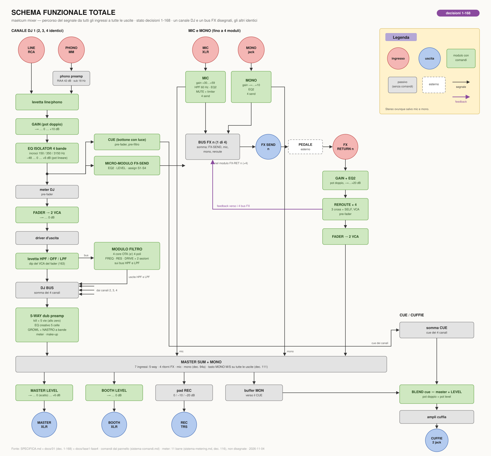
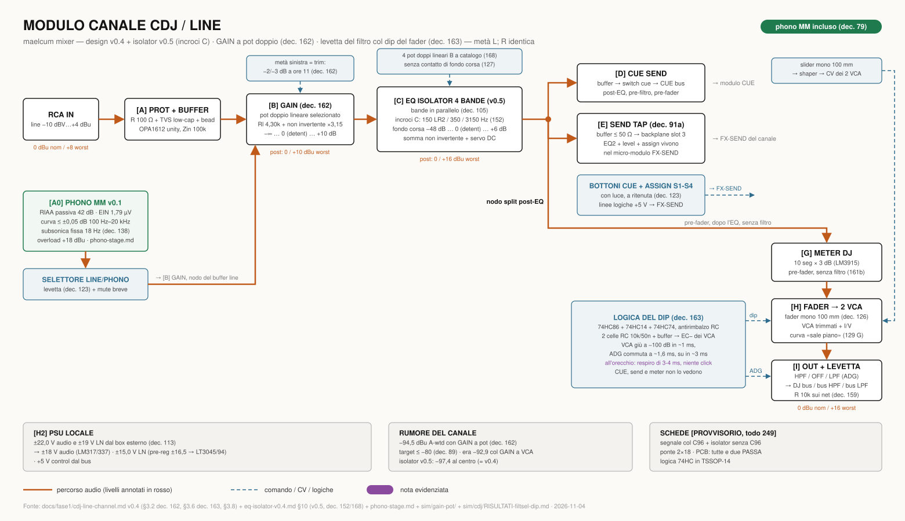
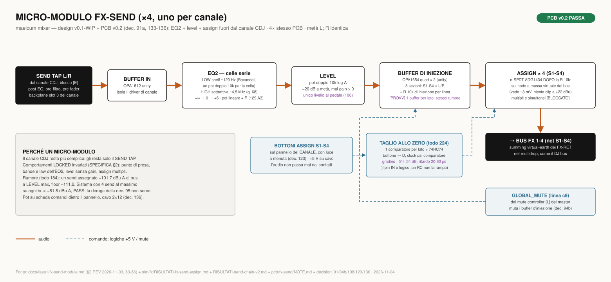
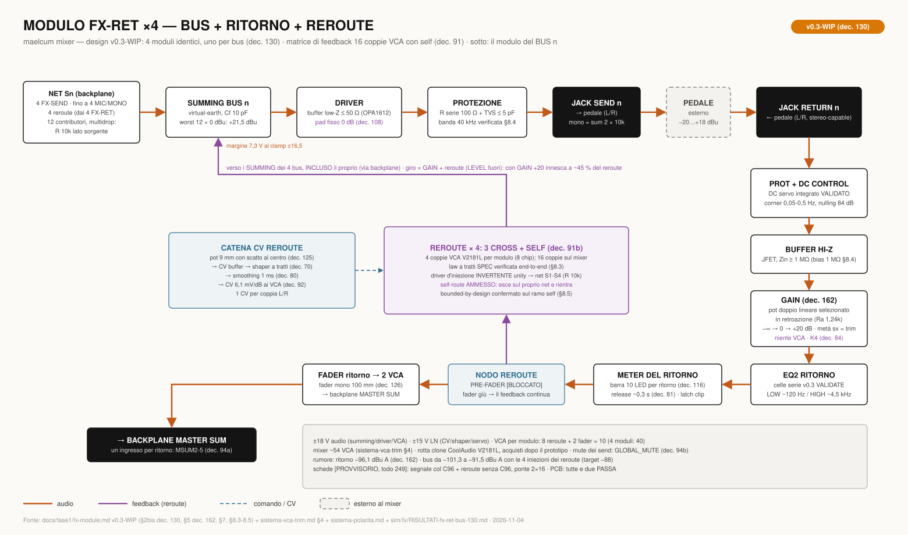
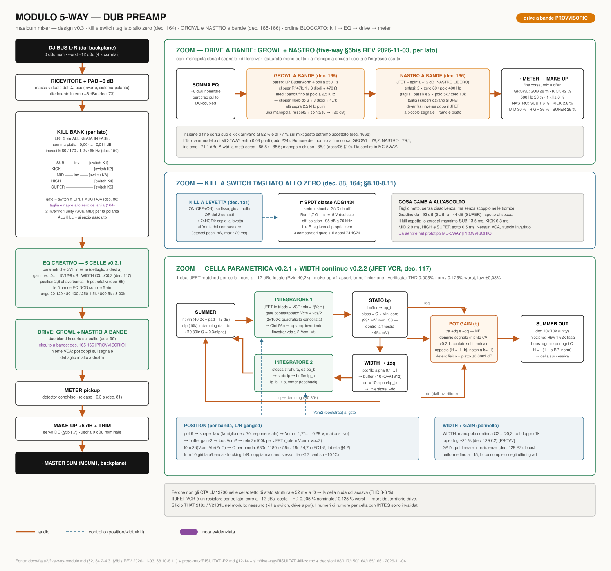
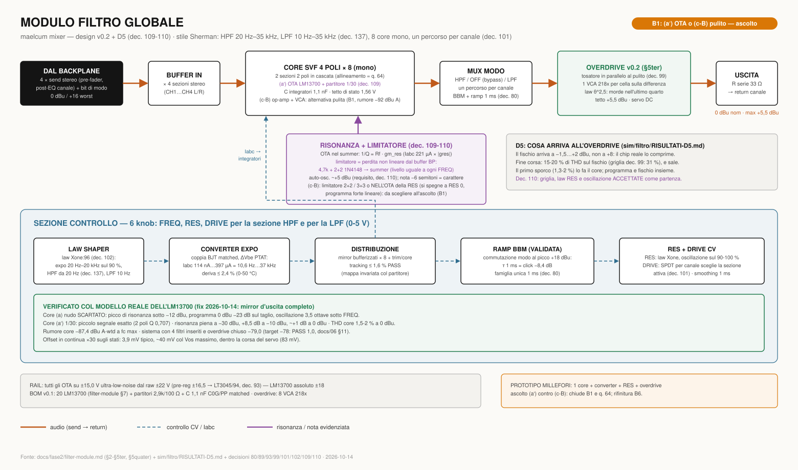
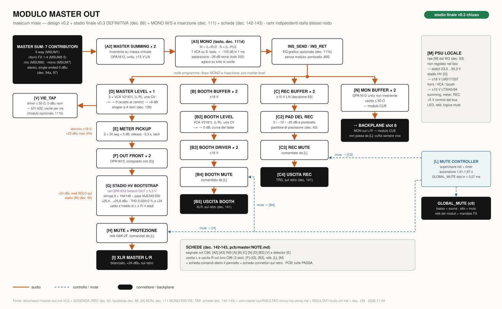
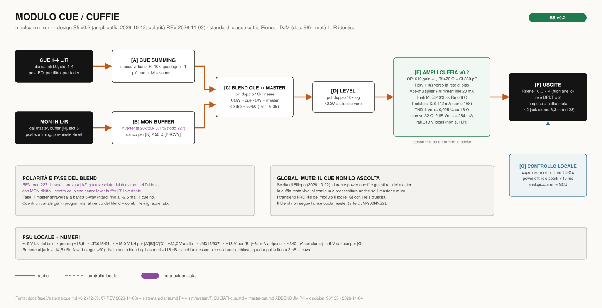
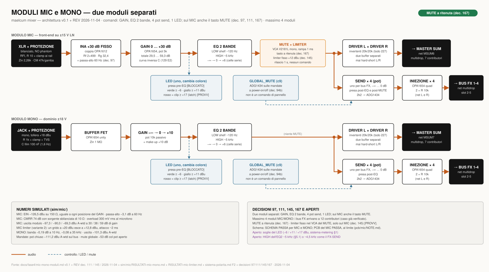
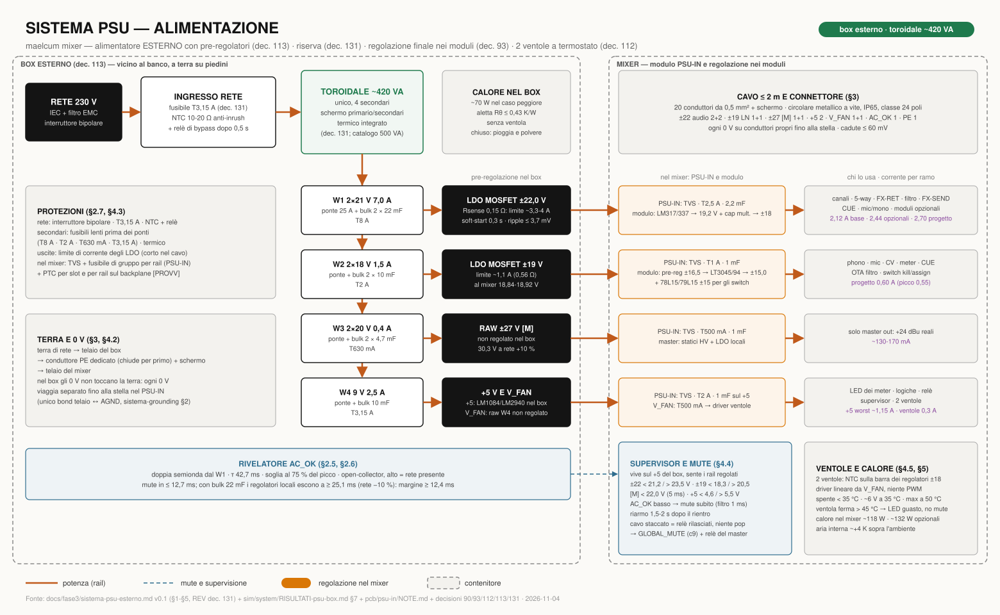
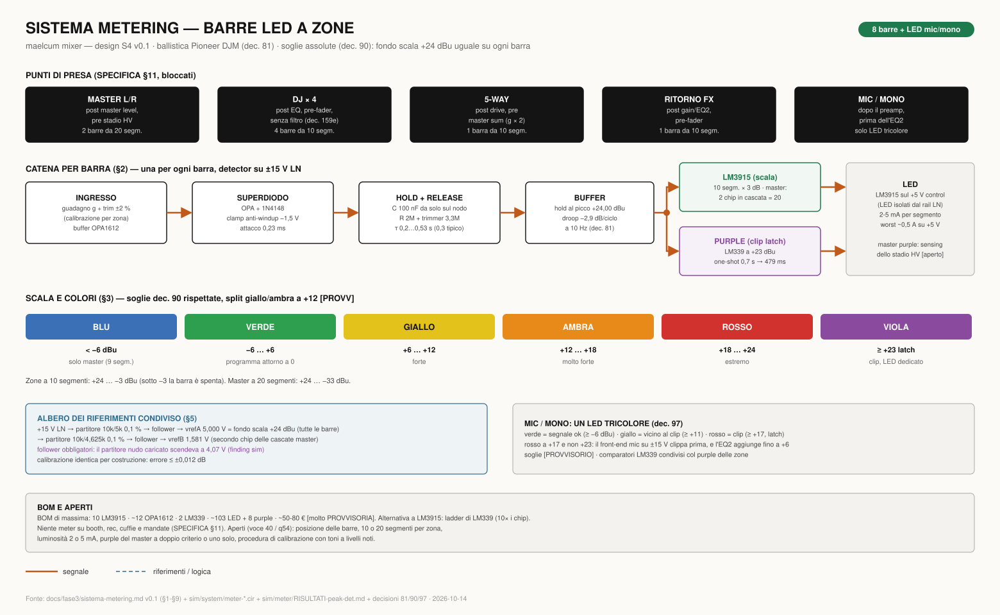